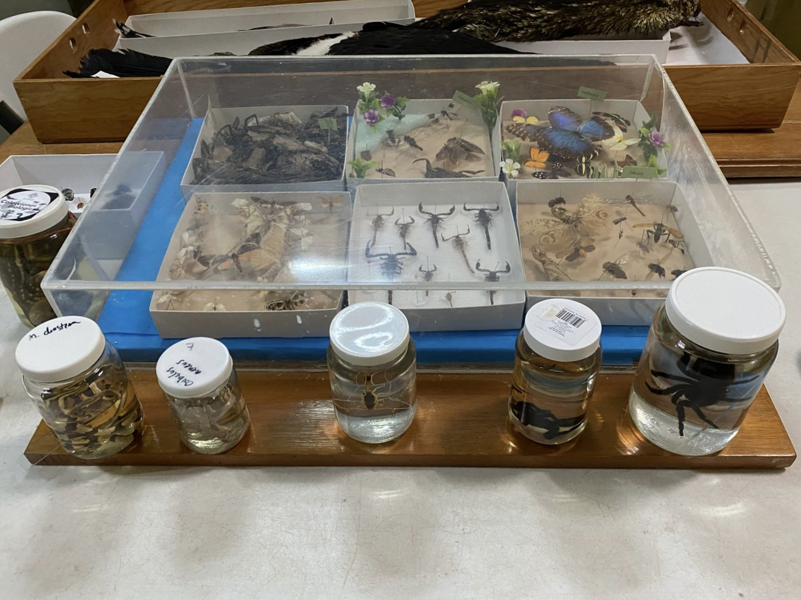
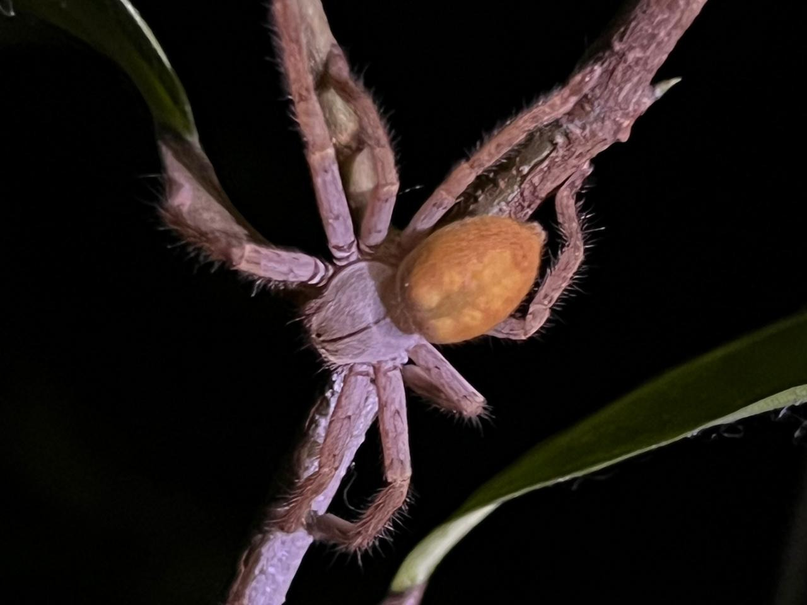

Digital Inventory of Sparassidae (Araneae)The Colección Arácnidos Chetumal inventory comprises one species and five morphospecies of the family Sparassidae, represented by 66 standardized images. The catalog is currently under review for incorporation into the Colecciones Biológicas platform of El Colegio de la Frontera Sur.
The Colección Arácnidos Chetumal (ECO-CH-AR), officially registered with the Dirección General de Vida Silvestre (DGVS) under permit number DGVS-CC-323-QROO/21, is housed in the Museo de Zoología of the Chetumal Unit of El Colegio de la Frontera Sur. The collection includes specimens collected since 1989 and currently comprises 3,618 catalog numbers (lots) and 5,428 specimens, representing 54 families, 145 genera, and 167 species. As of 2022, a total of 1,151 records have been identified to species level, comprising 131 species collected from 144 localities.
The family Sparassidae accounts for 1.34% of the Araneae holdings of the collection. It is represented by 51 lots comprising 55 specimens, assigned to one species and five morphospecies, all of which are documented in the present catalog. Sparassidae specimens were collected from three localities: Othón P. Blanco, Quintana Roo; Bacalar, Quintana Roo; and Calakmul, Campeche.
We thank the curators of the Arachnid Collection at the Chetumal Unit of El Colegio de la Frontera Sur, Dr. Yann Henaut and M.Sc. César Raziel Lucio Palacio, for granting access to the collection material. We also thank Adrián Uriel Cachón Mis for conducting the census and curatorial work of the material deposited in the collection, including the extraction and preparation of the specimens examined, and, with the assistance of Biol. Humberto Bahena Besave, for obtaining the photographs used in this study.